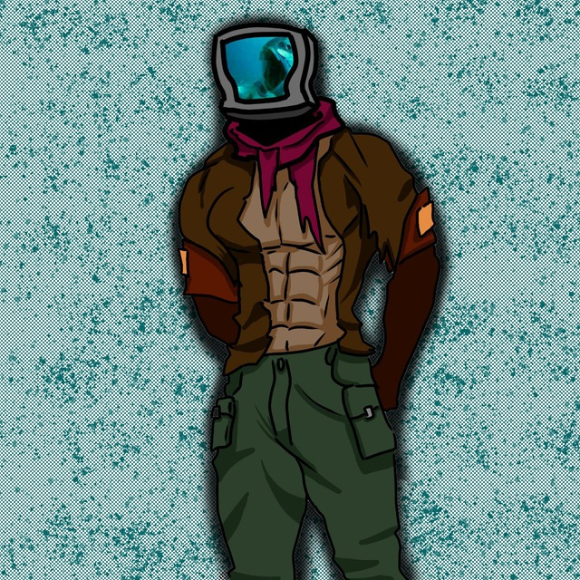

RblBEHAteam
Автор · Карты
ЙОУУУУ, я, Рыбëха, с другом довольно любим строить из кубиков, и решили заливать это на майнкрафт-инсайд. На данный момент ничего не делаем, но ВДРУГ ЧТО ссылочка снизу, можешь посмотреть, может быть уже что-то делаем интересное.
← Назад к авторам
 МапДев Вики
МапДев Вики